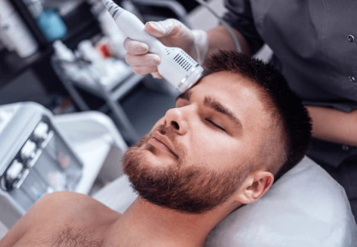
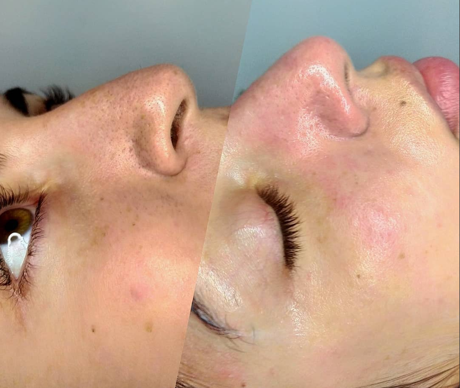
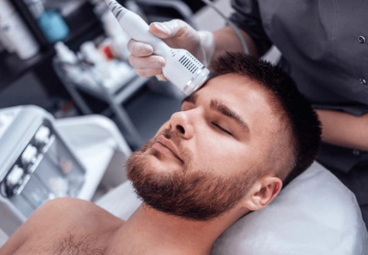
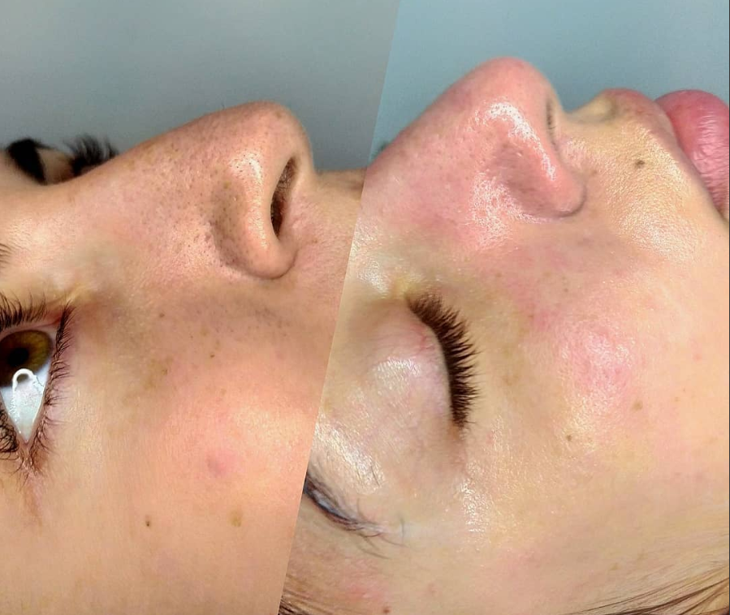

¿Qué es la Limpieza Facial?
La limpieza facial profunda es un tratamiento dermatológico profesional que elimina impurezas, células muertas, puntos negros y exceso de grasa acumulada en los poros. Es el primer paso esencial para mantener una piel sana, radiante y libre de imperfecciones.
Beneficios del Tratamiento
- ✓ Elimina puntos negros y espinillas
- ✓ Desobstruye los poros profundamente
- ✓ Remueve células muertas
- ✓ Mejora la textura de la piel
- ✓ Aumenta la luminosidad natural
- ✓ Prepara la piel para otros tratamientos
- ✓ Reduce la aparición de acné
- ✓ Promueve la regeneración celular
¿Cómo funciona?
Desmaquillado y Limpieza
Removemos todo tipo de maquillaje e impurezas superficiales.
Exfoliación
Eliminamos células muertas preparando la piel para el tratamiento.
Vapor y Extracción
Abrimos los poros con vapor y extraemos puntos negros de forma profesional.
Mascarilla
Aplicamos mascarilla personalizada según tu tipo de piel.
Hidratación
Finalizamos con hidratación profunda y protección solar.
Detalles del Servicio
⏱ Duración: 60 minutos
Precio: $45.000
Frecuencia recomendada: Cada 30 días
Para quién: Todo tipo de piel
Recomendaciones
Antes del tratamiento:
- No usar productos exfoliantes 48 horas antes
- Evitar exposición solar intensa
- Llegar sin maquillaje de preferencia
Después del tratamiento:
- Usar protector solar diariamente
- Evitar maquillaje pesado por 24 horas
- No tocar la cara con las manos
- Mantener hidratación constante